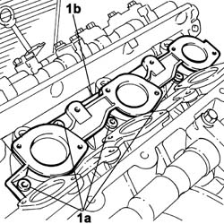

1072B12 INTAKE MANIFOLD (one), left or right - R.R. and Replace seal
- Path
- Procedures > 10 ENGINE > 1072 inlet and exhaust manifolds > 1072B inlet manifolds > 1072B12 INTAKE MANIFOLD (one), left or right - R.R. and Replace seal
- Kind
- repair procedure (removal / refitting; the operation number is the code)
- Applies to
- engines: 3.0 V6, 3.2 V6; all production periods
- Interactive page
- https://sloeber94.github.io/elrnDB-lThss/en/#/187422
Applies to: engines: 3.0 V6, 3.2 V6; all production periods
 Removing
Removing
 Refitting
RefittingSee in Op. 1072B42 INTAKE MANIFOLDS (all) - R.R. and Replace gasket
See in Op. 1056B62 FUEL PIPE ASSEMBLY, LEFT AND RIGHT, COMPLETE WITH INJECTORS - R.R.
-
1. Undo the bolts (1a) and remove the intake manifold (1b) involved complete with seal.

Applies to: engines: 3.0 V6, 3.2 V6; all production periods
Refitting
Removing- Fit the intake manifold complete with a new seal and tighten the fixing bolts.
See in Op. 1056B62 FUEL PIPE ASSEMBLY, LEFT AND RIGHT, COMPLETE WITH INJECTORS - R.R.
-
See in Op. 1072B42 INTAKE MANIFOLDS (all) - R.R. and Replace gasket
Topics linked from this page (2)
- 1056B62 FUEL PIPE ASSEMBLY, LEFT AND RIGHT, COMPLETE WITH INJECTORS - R.R.
- 1072B42 INTAKE MANIFOLDS (all) - R.R. and Replace gasket